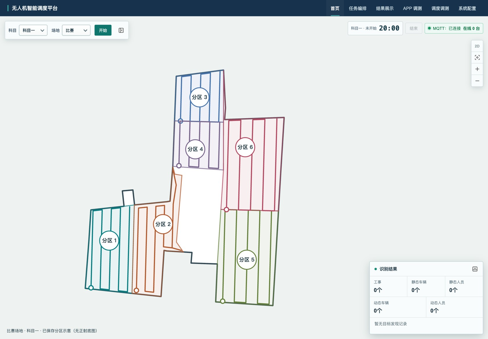
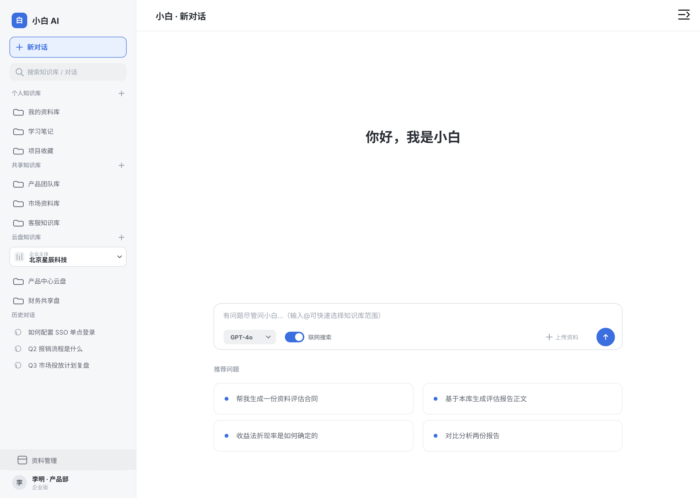

无人机赛事 · 平台产品
把比赛规则，落到产品流程。
负责需求拆解、监控交互与页面推进，协同设备、算法和研发团队，衔接赛前准备、赛中监控与赛后核验。
- 01
赛前 · 任务准备
将科目、分区与时长规则，组织成任务编排和预览流程。
- 02
赛中 · 状态监控
组织场次计时、设备状态与识别结果的展示和反馈。
- 03
赛后 · 结果核验
梳理结果记录、查询与联调验证，配合团队完成比赛。
我的交付
需求与交互 · 平台页面 · 联调与测试资料
LISA HE / PRODUCT PORTFOLIO
理解业务，定义产品，
推进交付。
具备开发背景的产品经理，关注AI与复杂业务的结合。把业务规则、数据与设备能力，转化为清晰的产品流程和可验证的交付。
从比赛规则，到任务准备、监控与结果管理。

SELECTED WORK / 01
通过具体的产品问题、方案与交付，了解我的工作。
无人机赛事 · 平台产品
负责需求拆解、监控交互与页面推进，协同设备、算法和研发团队，衔接赛前准备、赛中监控与赛后核验。
将科目、分区与时长规则，组织成任务编排和预览流程。
组织场次计时、设备状态与识别结果的展示和反馈。
梳理结果记录、查询与联调验证，配合团队完成比赛。
需求与交互 · 平台页面 · 联调与测试资料
 02 / HEALTH AI
02 / HEALTH AI版本迭代 · 展会交付
规划健康报告、智能穿戴与BI产品方案，推进版本迭代；BI看板用于深圳人工智能展会。
查看案例
03 / ENTERPRISE AI原型完成 · 计划调整暂停
设计资料范围限定、引用溯源与文档初稿流程，完成知识库工作台方案和交互原型。
查看案例查询 → 询价 → 业务跟进
从0到1上线 · 双市场
建设俄罗斯与欧美两个站点，串联查询、询价及后台流程，协同运营推动月均询单量200+。
查看案例HOW I WORK
把业务、技术与执行连接起来。
常用工具 Figma · MasterGo · Axure · Xmind · ProcessOn · 飞书 · Coding · FinBI
EXPERIENCE
公司介绍：
参与AI知识库、会计、审计及通用OA平台建设，面向专业业务与企业协作场景开展产品设计。
业务背景：
面向企业专业服务与内部协作场景，梳理知识库、会计审计与OA的业务流程，统筹专业业务功能与平台共用能力。
岗位职责：
公司介绍：
爱八方集团旗下“AI+生命科学”企业，融合基因测序、健康大模型与生物信息分析，面向C端提供个性化健康管理产品。
业务背景：
围绕基因与智能穿戴数据融合，推进醒来APP健康报告、数字人交互与BI可视化产品建设。
岗位职责：
公司介绍：
为全球OEM/ODM/EMS企业提供电子元器件分销、研发与技术服务，并拓展海外线上贸易业务。
业务背景：
面向俄罗斯与欧美市场，从0到1建设海外独立站，衔接用户查询、询价与后台业务管理。
岗位职责：
公司介绍：
面向芯片行业提供供需信息撮合、规格书查询与行业资讯服务，运营icspec平台。
业务背景：
围绕供需撮合与资料查询，推进PC、App、小程序及H5多端迭代，优化供需沟通与使用体验。
岗位职责：
公司介绍：
为三顿半咖啡、笑果文化、茶颜悦色、果呀呀、文和友等品牌提供数字化产品服务。
业务背景：
围绕品牌小程序，开展票务、点单、积分与优惠券等消费场景的产品设计与交付。
岗位职责：
ABOUT ME
我习惯主动进入业务，理解用户为什么需要一个功能，再决定如何设计。开发背景让我能理解实现逻辑，也能在业务、算法、设计与研发之间推进需求对齐。
经历覆盖健康大模型、企业知识库、会计审计与OA平台，以及无人机赛事系统。持续关注AI的实际应用，也重视每个阶段的具体交付。
LET’S CONNECT
AI产品经理 · 企业应用 · 产品设计与项目交付